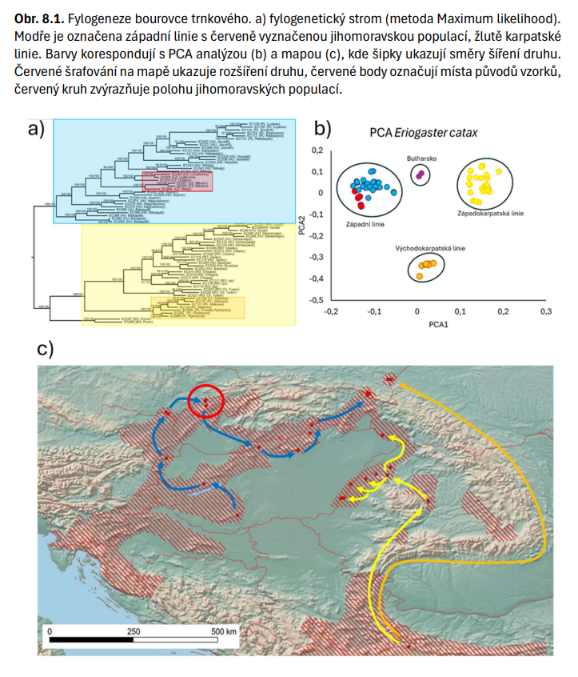
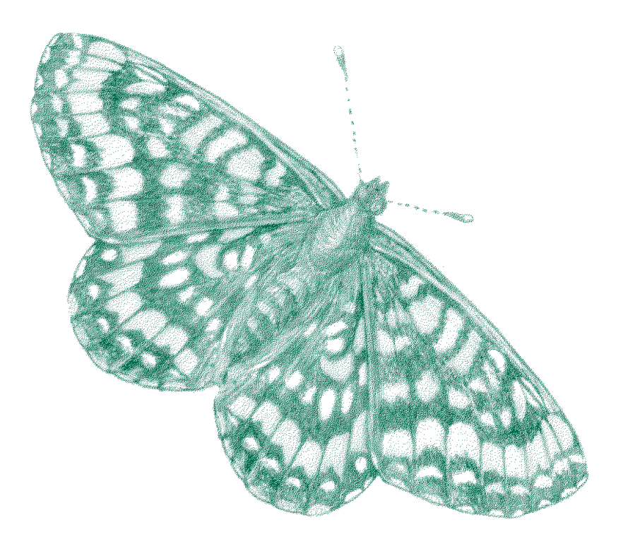
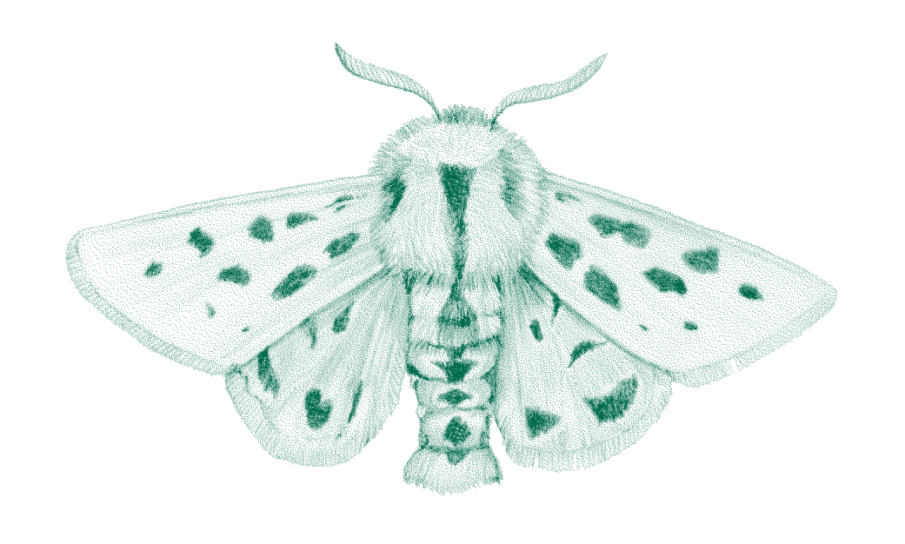
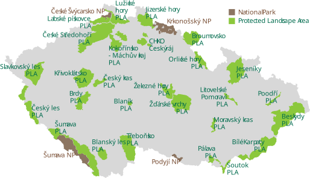

Genetic Monitoring in Czech Insect Conservation
Jonas Gaigr
Nature Conservation Agency of the Czech Republic
Department of Biodiversity Monitoring
Nature Conservation Agency of the Czech Republic | aopk.gov.cz
Where we stand
One-off studies today; a strategic mandate for a standing system.
Current State: What the NCA Does
- The NCA currently lacks a standardised, long-term national monitoring system for genetic diversity.
- It focuses primarily on one-off genetic studies for selected groups of species.
- Data collection is project-specific and often linked to active species conservation and applied research.
- Genetic characterisation answers immediate management questions rather than building a continuous time series.

Genetic Monitoring in Czech Insect Conservation | 8 September 2026AOPK ČR | aopk.gov.cz
The Strategic Mandate
- Kunming-Montreal Framework (CBD, 2022): Goal A requires genetic diversity to be maintained so populations retain their adaptive potential; Target 4 requires it to be maintained and restored within and between populations of native wild species.
- The Objective: Translate this strategic need into a unified, long-term monitoring system.
- Targeted Approach (IUCN, 2022): Not all species require monitoring. The focus should be on systematic selection by conservation relevance, feasibility of sampling, and the ability to influence decision-making.
- Transition from ad-hoc projects to methodologically comparable, repeated monitoring over time.
Genetic Monitoring in Czech Insect Conservation | 8 September 2026AOPK ČR | aopk.gov.cz
Cases: Czech butterflies
What genetic data have already told us, and what they changed.
Case: Euphydryas maturna
- The scarce fritillary: a microsatellite study (2023) combining historical and recent samples.
- Trend: variability in the Dománovice / Elbe-lowland population has declined, and the population is markedly distinct from those in neighbouring countries.
- Origin: the population near Frýdek-Místek is not autochthonous – the data point to southern Slovakia.
- Decision-grade evidence: the result feeds directly into genetic management choices.

Genetic Monitoring in Czech Insect Conservation | 8 September 2026AOPK ČR | aopk.gov.cz
Natura 2000 Butterflies
- Assessment of genetic conditions in current and historical populations of butterflies of European importance, with a proposal for future genetic management of those populations.
- Microsatellites (SSR) for seven species – Lycaena helle, Coenonympha hero, Colias myrmidone, Parnassius mnemosyne, Phengaris arion, P. nausithous and P. teleius – with present-day parameters compared against the same populations in the past.
Genetic Monitoring in Czech Insect Conservation | 8 September 2026AOPK ČR | aopk.gov.cz
From Markers to Genomes
- RADseq to assess the standing and condition of current populations of Eriogaster catax and Euplagia quadripunctaria.
- Ongoing, 2024–2026: Genomics for insect conservation in the CR: butterflies as a model group, a TA ČR project with the NCA as application guarantor.
- The step from single-species studies to testing genomic approaches across practical invertebrate conservation.

Genetic Monitoring in Czech Insect Conservation | 8 September 2026AOPK ČR | aopk.gov.cz
Precedents from Abroad
- Switzerland, genomic pilot: five species including the fritillary Melitaea diamina; over 1,200 individuals from 158 populations by proportional stratified random sampling, with reference genomes and whole-genome resequencing.
- Historical collection samples for two of the five species allowed change to be assessed retrospectively – museum material as a baseline.
- BGEMS, a common species as sentinel: 1,024 meadow browns (Maniola jurtina) from 15 sites in southern England, 2012–2019, a true annual series at three of them, extended across ten countries through existing butterfly monitoring schemes.
- Both convert whole-genome data into indicators an agency can act on: diversity, connectivity, inbreeding and \(N_e\).
Genetic Monitoring in Czech Insect Conservation | 8 September 2026AOPK ČR | aopk.gov.cz
What monitoring could deliver
Where to pilot it, and what it should be asked to answer.
Options for Pilots: Species Action Plans
- Species Action Plans (SAPs) and Regional Species Action Plans (RSAPs) offer ideal pilot frameworks.
- Focus on populations undergoing reintroductions, reinforcements, or other active manipulations.
- Core Principle: The genetic relevance of every SAP and RSAP should be explicitly assessed.
- Genetic data must serve as a long-term indicator of success, evaluated alongside demographic trends and habitat conditions.
Genetic Monitoring in Czech Insect Conservation | 8 September 2026AOPK ČR | aopk.gov.cz
Potential Objectives of the NCA
- Indicator of Success: Utilising genetics to evaluate the efficacy of SAPs and RSAPs.
- Standardisation & Biobanking: Implementing minimum standards for metadata and the long-term preservation of biological material.
- Risk Screening: Using demographic and spatial proxies to identify populations at genetic risk.
- Genetic Baselines: Establishing reference genetic states for priority species.
- Repeated Monitoring: Tracking changes in effective population size (\(N_e\)), inbreeding, and connectivity over time.
Genetic Monitoring in Czech Insect Conservation | 8 September 2026AOPK ČR | aopk.gov.cz
How to deliver it
The capacity already exists – and a minimum scheme to put it to work.
NCA Capacities: A Nationwide Sampling Network
- The NCA possesses a unique nationwide field network and deep knowledge of local habitats.
- Existing long-term field monitoring infrastructure can be leveraged for low-cost, standardised sample collection (highly effective for invertebrates).

Genetic Monitoring in Czech Insect Conservation | 8 September 2026AOPK ČR | aopk.gov.cz
Biobanking and the Division of Labour
- NCA Role: Prioritisation, sampling coordination, metadata standardisation, biobanking, and management application.
- External Partners (Universities/CAS): Laboratory processing, bioinformatics, and methodological design.

Genetic Monitoring in Czech Insect Conservation | 8 September 2026AOPK ČR | aopk.gov.cz
Recommended Minimum Scheme
- Explicitly assess genetic relevance for all SAPs and RSAPs.
- Standardise sampling, metadata, and long-term archiving (biobanking), even if sequencing occurs at a later date.
- Utilise existing field monitoring networks for repeated biological sampling.
- Combine approaches: Use a narrow portfolio of genomically monitored species alongside a broader proxy-based screening of genetic risk.
- Pre-define protocols: Establish indicators, repetition intervals, and specific decision-making responses in advance.
Genetic Monitoring in Czech Insect Conservation | 8 September 2026AOPK ČR | aopk.gov.cz
Takeaways
- Make genetic relevance an explicit step in every SAP and RSAP, not an optional extra.
- Standardise and archive now; sequencing can follow later.
- Sample through the network that already exists – the field monitoring infrastructure is the cheapest route to standardised material.
- Pair depth with breadth: genomic monitoring of a few species, proxy screening of many.
- Decide the response before the data arrive – indicators, intervals and consequences, agreed in advance.
Genetic Monitoring in Czech Insect Conservation | 8 September 2026AOPK ČR | aopk.gov.cz
THANK YOU FOR YOUR ATTENTION!
aopk.gov.cz